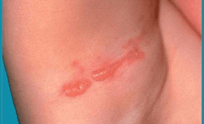

What is epidermolysis bullosa simplex?
Epidermolysis bullosa (EB) simplex is a rare inherited skin disorder which causes blistering. In the most common form,
blisters tend to be confined to the palms and soles, although occasionally they arise in the mouth, and are most troublesome
during warm weather. The more severe form is called EB simplex Dowling-Meara and those affected have more widespread blistering
which does not vary according to the time of year. EB simplex is different from the junctional and dystrophic forms of EB, and
if you have EB simplex you will not go on to develop these other types of EB.

The top layer of skin (the epidermis) is composed of layers of cells. Each cell has an internal skeleton formed from proteins
(keratins), giving it strength and shape. In EB simplex, there is a weakness in one of these proteins (usually type 5 or type
14 keratin, but very occasionally another protein called plectin), which causes affected cells to be less resilient and to
rupture when subjected to even minor physical stress. When the cells break, they separate from each other, fluid accumulates
between them and a blister forms.
Weakness of the protein is caused by a minor abnormality (a mutation) in the gene responsible for producing that protein.
A variety of such mutations have been identified in EB simplex, some of which are common amongst sufferers of the condition
while others are only found in single families.
Yes. It is inherited in a dominant fashion. This means that one parent of an affected person will also usually have the condition,
although it is possible for EB simplex to appear for the first time in a person who has no other affected family member. Anyone
who has EB simplex can pass the condition on to his or her children: there is a 50% chance that the child of an affected parent
will inherit the blistering tendency. EB simplex affects men and women equally. It is not an infection, it is not contagious
and it is not due to an allergy.
The primary symptom of EB simplex is blistering, which is often painful and which can sometimes significantly affect daily
activities of living and interfere with school and work.
Commonly, the blisters occur for the fist time during early childhood, affecting sites of friction such as under the elasticated
areas of a nappy or, during the crawling stage, the hands and knees. Later, painful blisters tend to develop on the soles after
walking only short distances. The formation of blisters is most troublesome during warm weather, and a few individuals may even
be free of blisters during the winter. Writing with pens and pencils can cause blisters to appear on fingers, especially in
children. Blisters may also appear under close fitting clothing such as waistbands, collars or the ribbing of socks. A few people
find that hot food or drink will cause blistering within the mouth.
In the Dowling-Meara variant of EB simplex, blisters occur for the first time at an earlier age, usually within a few days of birth.
They can occur anywhere on the body. In some, they may disappear for a short while during a feverish illness.
Thickened skin on the palms and soles, sometimes associated with an increased tendency to sweating at these sites, can be a feature
of EB simplex.
Although abnormal blistering tends to be life long, it sometimes becomes a little less severe in adult life. Dowling-Meara EB simplex
often improves dramatically after early childhood.
The blisters of typical EB simplex look the same as the blisters that anyone can get as the result of friction to the skin. However,
although they vary in size, they tend to be large and numerous, but heal without leaving any scars. In the Dowling-Meara variant,
blisters tend to occur in clusters on the body and limbs, often healing to leave residual pigmentation.
The diagnosis of EB simplex can usually be made on the basis of the individual’s history (especially if other family members are affected)
and the distribution of the blisters. Occasionally, if there is uncertainty about the diagnosis, your dermatologist may suggest taking a
small sample of skin for more detailed microscopic examination. A blood test may be suggested to look for mutations of the genes likely
to be involved.
In the past 20 years, there has been exciting and rapid progress in the understanding of EB simplex, but at the moment there is no cure.
Several laboratories around the world are exploring strategies that they hope will lead to an effective treatment.
Your dermatologist and specialist nurse will explain the best way to manage your blisters. It is generally recommended that new
blisters are burst with a sterile needle, available from your doctor. In infants careful handling and application of non-sticky dressing will be required.
In older children and adults often no dressing is necessary, however if one is required it is important to use a product that will not stick
and damage the skin or cause further blistering when it is removed. Dressings with a silicone layer in contact with the skin are usually
suitable as they are very easy to remove, and hydrogel dressings are known to help cool the blistered area and have a soothing effect.
Treatments to reduce sweating of palms and soles may be of benefit. Depending on the severity, input may be required from a number of
different specialists including nurses, dermatologists, paediatricians, pain specialists, podiatrists and dieticians.